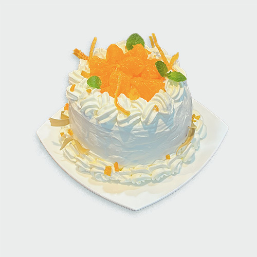
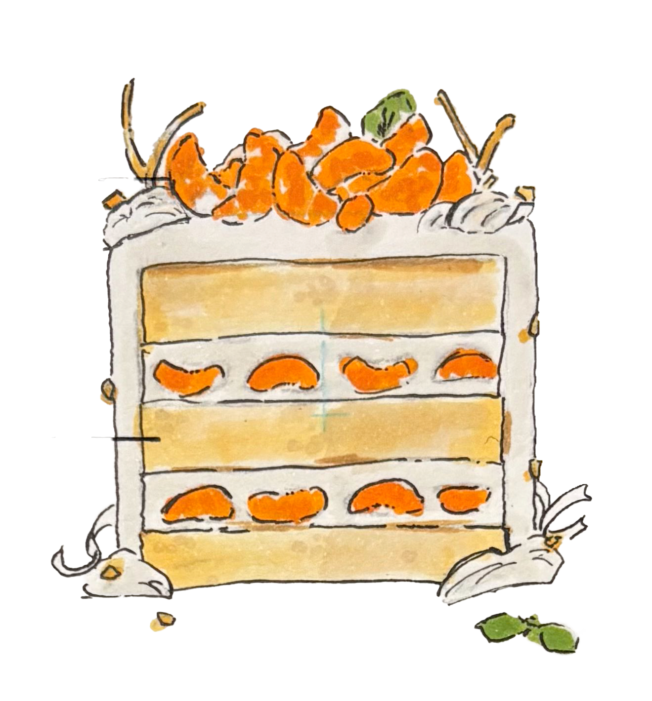

GATEAU DE NOEL A LA MANDARINE

ミカンとマスカルポーネを使ったクリスマスのショートケーキです。
新鮮なミカンと、そのミカンの皮をドライオレンジピールのように乾燥させ、さとうをまぶしたものが使われており、ミカンを余すことなく堪能できるケーキとなっております。
クリームには生クリームにマスカルポーネが加わることでかんきつ類と相性のよいチーズケーキをほうふつさせるようなクリームに仕上げました。
- mandarine orange
- mascarpone cream
- genoise
- white chocolate
